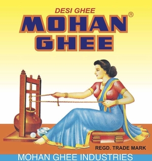
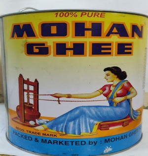

|


|
MOHAN GHEEMohan Ghee is one of the oldest & trustworthy brand of ghee with the motto Purity is our priority. ORDER NOW |
Home |
DESI GHEE is perhaps the most ancient source of elixir on mother Earth. This is why Desi Ghee has a dominant place in healing and rejuvenation in Ayurveda.
There are two types of Desi Ghee mentioned in Ayurvedic texts:
THE DIFFERENCE IS THE PROCESS: BILONA – CHURNING OF CURD
Churning Process in making Ghee is seldom practiced now-a-days as it is time-consuming and costly. But then, it gives tremendous VALUE ADDITION to the quality.
'MOHAN GHEE' IS MADE BY CHURNING THE CURD
The process generates a naturally self developed UNIQUE AROMATIC FLAVOUR and texture. Moreover, since in this process, it is the curd being formed by human friendly bacteria, it digests easily in the human system providing more oxygen to the blood which is excellent for brain development in kids, pregnant and lactating women, the elderly and the young.
‘MOHAN GHEE’ A PREVENTIVE AND CURATIVE 'SUPER-FOOD’
Curd based Desi bilona Ghee has a broad spectrum of medicinal, cosmetic and health benefits.
Perhaps the most important feature of 'MOHAN GHEE' which is made through this traditional VEDIC PROCESS is that, it retains its pro-biotic properties, provides nourishment to the entire body and also helps rejuvenate the self ... THE BODY AND THE SOUL...
MOHAN GHEE has been winning trust of consumers for more than seven Decades, as Pure Desi Ghee of UNMATCHABLE PURITY AND QUALITY.....
‘’Ae ji Mohan Ghee lete aaiyega.......”
| Quality: | ⭐⭐⭐⭐⭐ |
| Taste: | ⭐⭐⭐⭐⭐ |
| Service: | ⭐⭐⭐⭐⭐ |